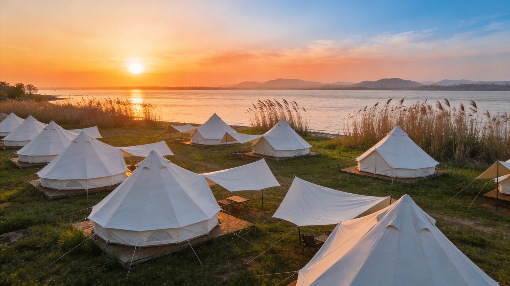
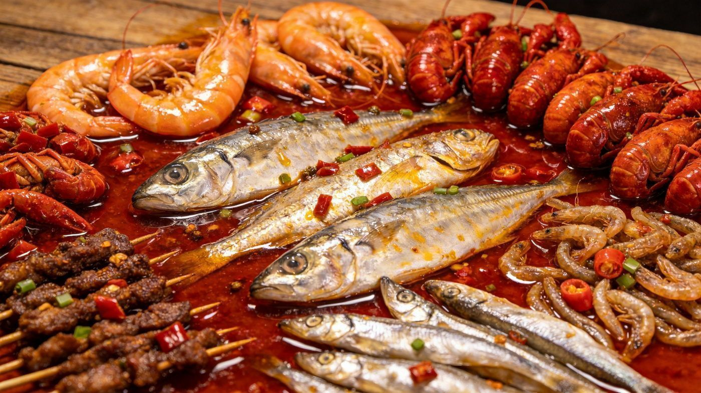

2026 随时出发 ｜ 洞庭天下水 · 岳阳天下楼，一册在手边走边看
华中首座大型熊猫基地，占地 367 亩、入驻 10 只国宝，竹林山水间的生态园区。建议 8:30 一开园就进，熊猫最活跃。
凭栏远眺「气蒸云梦泽」的八百里洞庭，登三楼看范仲淹笔下的山水。5A 景区，江南三大名楼中唯一清代原构。
洞庭湖东岸向湖延伸 20 多公里的湖床湿地，落日落向远岸、霞光铺满湖面，被誉为「岳阳最美日落」「湖南的阿勒泰」。
从市区跨洞庭湖大桥到君山，一天能串起江豚湾微笑绿洲露营 → 东洞庭湖观鸟 → 麋鹿苑 → 洞庭湖博物馆，把「江豚的微笑、麋鹿的倩影、候鸟的欢歌」一次看全。

岳阳南下平江县，藏着「五岳之外有天岳」的天岳幕阜山（道教第二十五洞天、1596m 三省第一峰）与石牛寨白色丹霞，高山避暑、云海日出、湖南海拔最高露营基地都在这。
看完日落回市区，挑一条美食街把夜色吃到撑。汴河街仿明清古街，炮台山美食街是吃烧烤的首选。

翘嘴鱼、银鱼、清蒸江鲢、铁山翘嘴——最鲜的湖里味道。
炮台山美食街，炭火炙烤，被央视认证「南方烧烤界标杆」。
夜市宵夜三件套，麻辣鲜香停不下来。
顶糕、平江香干、兰花萝卜、糖油粑粑、猪脚粉/米粉。
老街/洞庭南路来一杯，飘尾日落配冰粉更惬意。
中国十大名茶之一，出自洞庭湖君山。「金镶玉」之誉。
想看飘尾日落务必选晴天、提前查日落时刻；洞庭湖区早晚温差大，备件薄外套。
想更丰富可加君山岛、圣安寺、洞庭湖小镇或一台夜间实景演出，视体力和时间取舍。
岳阳 · 洞庭湖 · 湘北秘境 · 岳阳楼、熊猫苑、江豚湾露营、平江幕阜山与湘味美食 · A5 便携片 · 返回旅行小册子